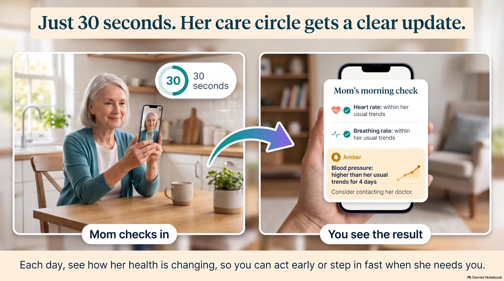

Daily picture
See the trends calls and texts miss.
A 30-second check on their phone shows how blood pressure, heart rate, and other vitals compare with their usual, and whether they are taking their medicines on schedule.
- Vitals come from the phone, watch, or band they already own. No extra hardware to buy.
- Each reading is compared with their own history and profile.
- Missed medicines show up as a pattern the family can see.